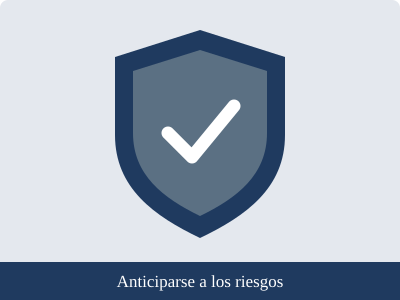

Autocuidado, prevención y derechos
Proyecto Interdisciplinario · Luis Navarro · 2.º Técnico · Unidad Educativa San Esteban
|
Inicio |
Autocuidado |
Prevención |
Derechos |
Fuentes confiables
Prevención

Qué significa prevenir
Prevenir consiste en actuar con anticipación para evitar que un problema ocurra o para reducir sus consecuencias.
Cuando se conocen los riesgos, es posible tomar decisiones más seguras para uno mismo y para los demás.
Un dato relevante
De acuerdo con la Organización Panamericana de la Salud (OPS) y la Organización Mundial de la Salud (OMS),
cada año mueren más de 1,2 millones de adolescentes en el mundo por causas que, en su mayor parte, podrían evitarse.
Esto demuestra la importancia de la información y de las acciones preventivas.
Principales riesgos y medidas de prevención
- Accidentes y tránsito: usar casco y cinturón de seguridad, respetar las señales y evitar el celular al cruzar la calle.
- Violencia, acoso escolar y ciberacoso: no compartir contraseñas, no reenviar contenido que humille a otra persona, bloquear y reportar a quien acosa, y comunicarlo a un adulto de confianza.
- Alcohol, tabaco y otras drogas: informarse en fuentes confiables, aprender a rechazar el consumo y buscar ayuda profesional si hay dificultades.
- Enfermedades: mantener el esquema de vacunación, practicar el lavado de manos y acudir al centro de salud ante cualquier malestar.
- Salud sexual y reproductiva: los adolescentes tienen derecho a recibir información veraz y atención en los servicios de salud. Es recomendable conversar con los padres, un docente o personal de salud; nadie puede obligar a otra persona a hacer algo contra su voluntad.
A quién acudir
- A la familia o a un adulto de confianza.
- Al DECE (Departamento de Consejería Estudiantil) y a los docentes de la institución educativa.
- Al centro de salud más cercano del Ministerio de Salud Pública.
- En caso de emergencia, al ECU 911.
Fuentes consultadas en esta página
Volver al inicio
Elaborado por Luis Navarro · 2.º Técnico · Unidad Educativa San Esteban